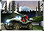
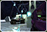
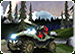
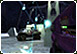

Halo is a Militaristic Sci-Fi First-person Shooter video game series created and published Bungie, Ensemble Studios, and 343 Industries. The whole series focuses on an Interstellar War between the two most brutal enemies in the Galaxy, Humans and a Theocratic Alliance of Aliens named as Covenant. The main focus of the series remains on one particular character named as Master Chief John 17, a Supersoldier from an advanced breed of Soldiers known as Spartans. An Artificial companion, Cortana companies the Master Chief throughout the series. Halo Series offers a lot of other characters of utmost importance in the games and provides with different interconnected stories, objectives and environments as well. The series offers multi-genre games as well as Novels, Graphic Novels, and loads of other products. Halo Series offers 3 main titles as the Original Trilogy including Halo: Combat Evolved, Halo 2 and Halo 3 along with Halo 4 and Halo 5: Guardians (As Reclaimer Saga releases), 5 Spin-offs Halo Wars, Halo 3: ODST, Halo: Reach, Halo: Spartan Assault and Halo: Spartan Strike. Furthermore, Halo Series offers hardcore Action-packed video games, all packed up with different interconnected stories, different objectives, unique characters, and all the incredible Intergalactic conflicts over the possession of a Super Weapons called Halo Rings and of course to survive.

Feature 1: If you're looking for beautiful and professionally made templates you can find them at Beauty.
Feature 2: To find great hosting providers visit Web Hosting Zoom.

This is a demo text. It will be replaced by the original.
- he game will include special packages and abilities: fighting, safety and support.
- The system is similar to the perks Call of Duty.
- Characters have levels, but what is the maximum – not reported
- Maps are designed specifically for Halo Online, while designed for 16 people.
- During the entrance to the card players get a job: to kill the head, jump 10 times, and so.
- On the map you can find different weapons: Bazooka example, which replaces the pistol slot.
- During the spawn, you can change the class and weapon